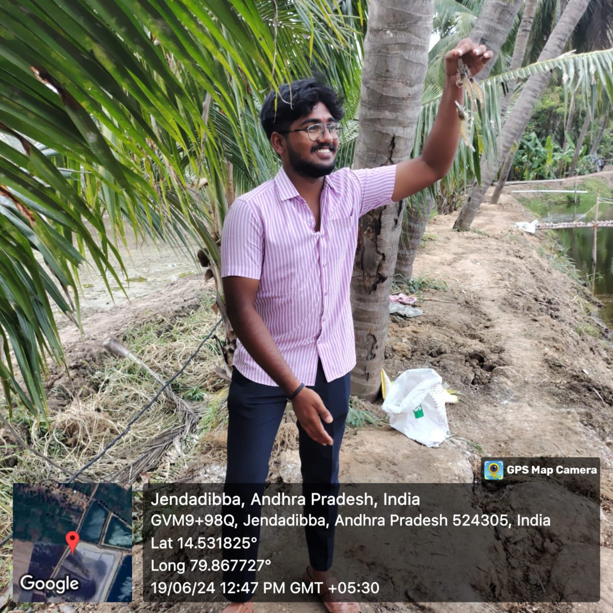
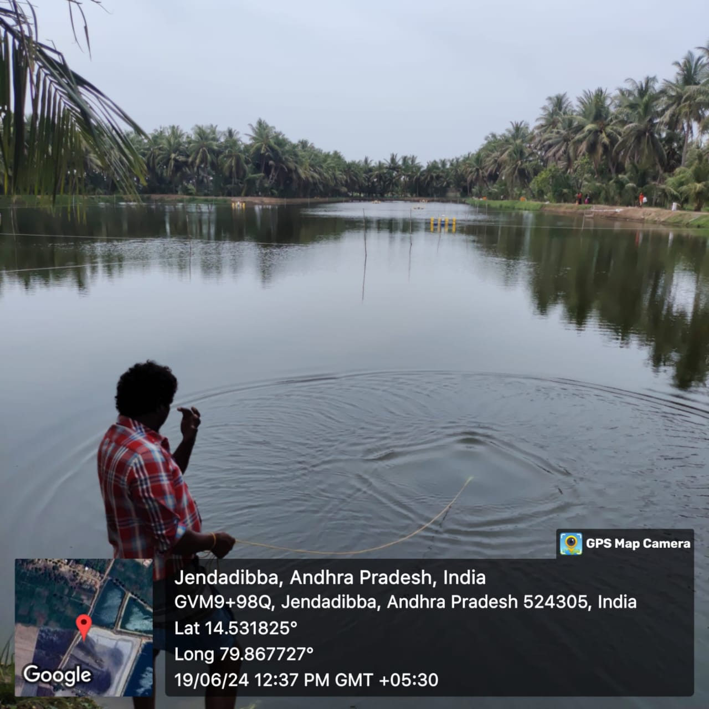

WEEKLY REPORT
WEEK- 6 (From 17-06-24 to 23-06-24)
Objective of the Activity Done: In this Week, I list out the Equipments which is used in the Aqua Farm and understand the Harvesting process of shrimp.:
Detailed Report:
Day 1:
- Equipment’s :
- Generators & Motors
Stators
Aerators
Transformer
- >These are equipment’s are used in aqua shrimp culture to use to run the culture with not any difficulties.
- >A high FCR or high amount of feed required to produce unit weight gain indicates overfeeding,and consequently, a poor FCR is usually associated with poor growth rate, low weight gain, stressed shrimp, mediocre water quality and adverse pond bottom conditions. Therefore, the proper amount of feed is the most critical factor of feeding management.
Cost of feed constitutes a major part of the production cost and accounts for 50% to 70% of the total variable cost. The use of feeds will improve shrimp production and increase profits.
Day 2:
- Harvesting & Handling :
- Successful harvesting can be achieved if the shrimp can be harvested in good condition within a short period of time The harvesting technique should not damage or excessively contaminate the shrimp with waste. Rapid harvesting will reduce the risk of bacterial contamination and the shrimp will still be fresh when reaching the processor.

